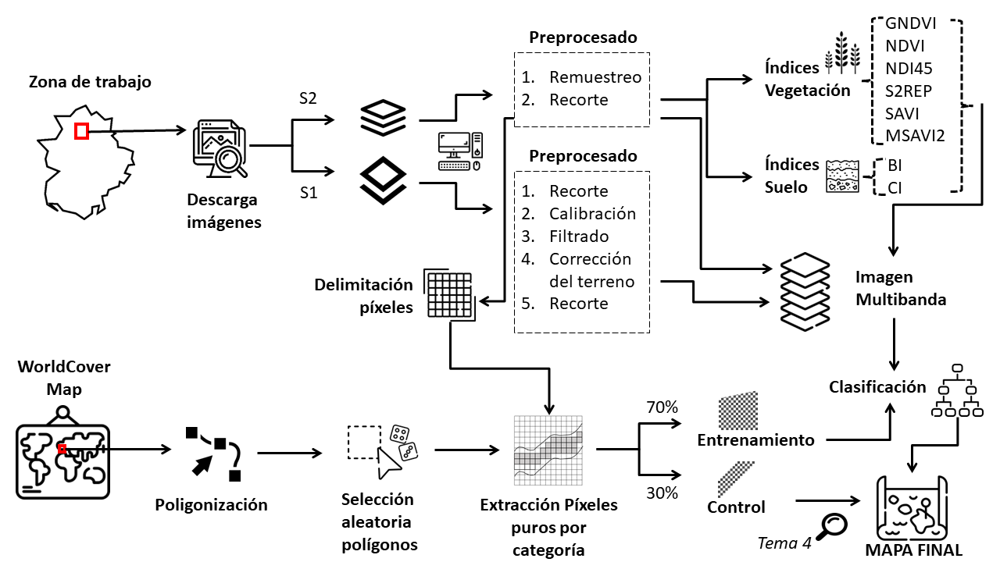

Presentación
La teledetección es la técnica de adquisición de datos de la superficie terrestre desde sensores aéreos o espaciales con el fin más habitual de elaborar mapas temáticos.
Uno de los programas de observación de la tierra más utilizado en la actualidad, por su versatilidad, su gran cobertura temporal y sus servicios gratuitos es el programa COPERNICUS.
En este tema 3 se analizarán las imágenes de dos de las misiones más importantes del programa (Sentinel 2 y Sentinel 1). Para ello, emplearemos el software SNAP (Sentinel Application Platform) que, aunque es específico del programa Copernicus, también puede trabajar con otros satélites o imágenes de sistemas aerotransportados.
Posteriormente, se realizará una clasificación supervisada añadiendo también la información de algunos índices espectrales.
El flujo de trabajo será el siguiente:
